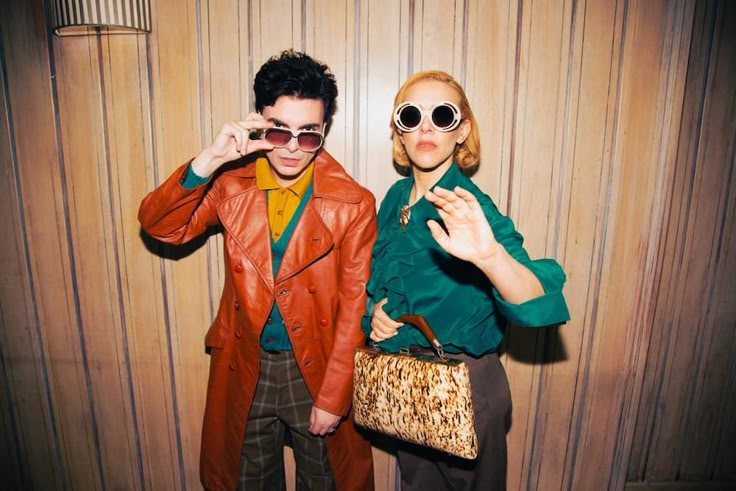
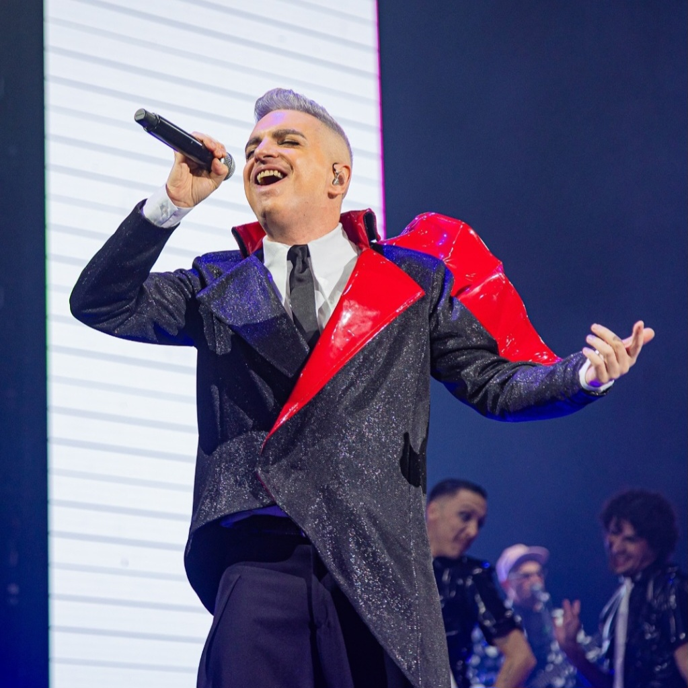
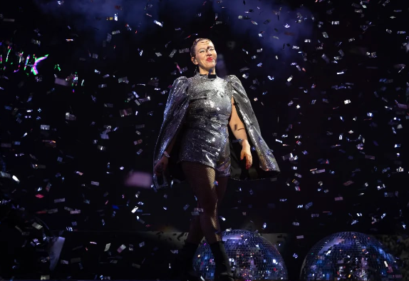

Biografía

Alejandro Sergi y Juliana Gattas son Miranda!, el icónico dúo que ha revolucionado el pop
latinoamericano con su estilo inconfundible y su sonido fresco. Desde sus inicios en la escena
underground de Buenos Aires, Miranda! ha cautivado al público con una mezcla única de
teatralidad, energía y magnetismo que se desborda en cada presentación en vivo. Su puesta en
escena extravagante, sus letras pegajosas y sus ritmos vibrantes, que van desde la balada pop
hasta el electro-rock, han convertido a la banda en una referencia indiscutible del género. Con
más de dos décadas de carrera, Miranda! no solo ha escalado los podios de los rankings más
prestigiosos, sino que también ha recibido numerosos premios y reconocimientos. Su habilidad
para reinventarse y seguir conectando con nuevas generaciones les ha asegurado un lugar en los
escenarios más importantes de América Latina y del mundo, consolidando una identidad artística
que es tan colorida y apasionada como inolvidable.
Alejandro Sergi

Alejandro Sergi, nacido en Buenos Aires en 1971, es un músico, compositor y productor argentino,
ampliamente conocido como la voz principal y cofundador de la banda Miranda!, la cual lanzó
junto a Juliana Gattas en 2001. Sergi es el creador de gran parte del repertorio de la banda,
componiendo temas que combinan elementos de pop, electrónica y rock con letras llenas de humor,
romance y teatralidad. Miranda! se destacó rápidamente en la escena musical por su estética glam
y su energía en el escenario, llevando a Sergi y a su música a la fama en América Latina y
España. Con el tiempo, se ha consolidado como un referente en el electropop en español,
colaborando con artistas de distintos géneros, lo cual amplió su influencia más allá de
Miranda!. Además de su rol en la banda, ha participado en producciones y proyectos paralelos,
demostrando una versatilidad que lo ha convertido en uno de los músicos más respetados de su
generación.
Juliana Gattas

Juliana Gattas, nacida el 1 de agosto de 1978 en Buenos Aires, es una reconocida cantante y
actriz argentina, famosa por ser cofundadora y voz principal de la influyente banda de pop
electrónico Miranda!. Desde muy joven, Gattas mostró un profundo interés por la música y el
teatro, comenzando a estudiar canto a los 15 años y destacándose en el ámbito del jazz. En 2001,
junto a Ale Sergi, formó Miranda!, que rápidamente se convirtió en un referente del electropop
en español. A lo largo de su carrera, Gattas ha lanzado numerosos álbumes exitosos, consolidando
su lugar en la escena musical latinoamericana. Además de su carrera en la música, ha sido jurado
en varios programas de televisión, lo que ha ampliado su visibilidad y popularidad en el medio
artístico. Su estilo único y su presencia escénica han hecho de Juliana una figura destacada en
la música y el entretenimiento en Argentina y más allá.
Historia
La historia de Miranda! comienza en 2001, cuando Alejandro Sergi y Juliana Gattas se unieron en
Buenos Aires para crear una propuesta diferente en la escena musical argentina. Inspirados por
sonidos electrónicos y melodías pop pegajosas, comenzaron a escribir y componer canciones que
rápidamente captaron la atención del público joven. Con la incorporación de elementos teatrales
y una estética llamativa, Miranda! se desmarcó de otros artistas de la época.
El lanzamiento de su primer álbum, *Es mentira* en 2002, fue decisivo para su ascenso. Este
trabajo presentó éxitos como “Bailarina” y “Imán”, y rápidamente comenzó a sonar en radios y a
captar la atención de la crítica. El grupo se volvió un fenómeno en Argentina y poco después en
otros países de América Latina. Su estilo excéntrico y su mezcla de pop con electrónica crearon
una propuesta atractiva y moderna, que destacó entre otros estilos más tradicionales.
A medida que avanzaban en su carrera, lanzaron otros álbumes exitosos como *Sin restricciones*
(2004), que incluyó el famoso sencillo “Don”, un himno que consolidó a la banda en el ámbito
internacional y alcanzó el reconocimiento en mercados como el mexicano y el español. Este tema,
junto a canciones como “El Profe” y “Navidad”, mostró su habilidad para contar historias de amor
y desamor con un toque humorístico y melodramático, estableciendo a Miranda! como uno de los
grupos más queridos de la década.
Con el tiempo, Miranda! se adaptó a los cambios en la industria musical sin perder su esencia
original. Han lanzado múltiples discos y continuado su carrera con un enfoque en la
experimentación de géneros y el perfeccionamiento de su sonido. Además, la banda ha mantenido su
espíritu innovador en sus presentaciones en vivo, caracterizadas por la energía de sus
interpretaciones y una estética visual impactante. Miranda! sigue vigente y con una gran base de
seguidores, consolidándose como un ícono del pop latino que inspira a nuevas generaciones de
artistas.
Miembros anteriores
En su trayectoria, Miranda! ha tenido varios cambios en su formación que han impactado su
evolución. Uno de los miembros iniciales, Bruno de Vincenti, fue crucial en los inicios de la
banda como productor y sintetista, contribuyendo al sonido distintivo que caracterizó su primer
álbum, Es mentira. Sin embargo, dejó el grupo en 2002 para perseguir una carrera en la música
electrónica, priorizando sus propios proyectos creativos.
Otro miembro notable fue Leandro "Lolo" Fuentes, quien se unió como guitarrista en 2002. Aportó
una nueva dimensión al sonido de Miranda!, pero, a pesar de su larga trayectoria con la banda,
decidió separarse en 2014. Esta decisión estuvo influenciada por diferencias creativas y
personales, ya que buscaba explorar nuevas direcciones en su carrera musical.
La dinámica de la banda ha sido marcada por estos cambios, reflejando no solo la evolución de su
música, sino también su adaptabilidad ante las circunstancias del mercado. Miranda! ha sabido
reinventarse y mantener su esencia a lo largo de los años, a pesar de las salidas de miembros
clave.
Premios
Miranda! es una de las bandas pop más influyentes de Argentina, reconocida no solo por su música
pegajosa y su estilo único, sino también por la gran cantidad de premios que ha recibido a lo
largo de su carrera. Hasta la fecha, Miranda! ha ganado un total de 278 premios y ha sido
nominada en 325 ocasiones. Esta impresionante cifra refleja su impacto en la industria musical y
la conexión que han logrado establecer con su público.
Entre los premios más destacados se encuentran:
- Premios Gardel: Miranda! ha recibido varios premios en esta ceremonia, incluyendo "Mejor
Álbum Grupo Pop" por Sin Restricciones (2005), Miranda Es Imposible! (2010), y Safari
(2015). Además, su álbum Fuerte fue galardonado en 2018, y Souvenir y Hotel Miranda! también
han sido reconocidos.
- MTV Europe Music Awards: En 2014, la banda ganó el premio a "Mejor Artista Latinoamericano",
consolidando su relevancia en la escena musical internacional.
- Premios Quiero: Este evento ha visto a Miranda! ganar varios galardones en diferentes años,
como "Mejor Director" y "Mejor Vídeo En Vivo" por "Fantasmas" en 2016.
- Festival Internacional de la Canción de Viña del Mar: La banda también se ha destacado en
este festival, llevándose a casa la Gaviota de Plata, las Antorchas de Plata y las Antorchas
de Oro en diferentes ediciones, destacando su popularidad en el ámbito latinoamericano.
- Premios 40 Music Awards: En 2007, la banda fue reconocida como "Mejor Artista Argentina".
Los numerosos premios y reconocimientos a lo largo de los años son un testimonio de la calidad
musical de Miranda! y de su capacidad para adaptarse y resonar con diferentes generaciones de
oyentes.